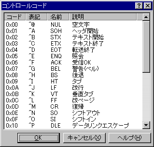

コントロールコード
キーボードからでは入力の困難なコントロールコードをカーソル位置に挿入します。
CR/LFは改行コードに変換されます。
CR/LFは変換ぜずにそのまま挿入します。(sakura 2.1.1.0以降)

 ヒント
ヒント
ダイアログの「表記」の列の文字を押すとその文字に対応するコードを挿入することができます。
例えば @ を入力すると NULL が挿入されます。
■マクロ構文
・構文: CtrlCodeDialog( );
・記録: ×
Char マクロとして記録されます。(sakura:2.0.9.0以降)
CtrlCode マクロとして記録されます。(sakura:2.1.1.0以降)
・構文: CtrlCode( int1 :Integer );
int1 文字コード
・記録: ○
Charと違い、改行コードも変換されずに挿入します。
(sakura:2.1.1.0以降)